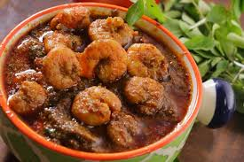

1. First, clean and wash fresh prawns properly.
Add turmeric powder and salt, then marinate for 15–20 minutes.
2. Chop onions, tomatoes, green chilies, and coriander leaves. Keep all ingredients ready for cooking.
3. Heat oil in a deep pan on medium flame. Add mustard seeds, curry leaves, and cumin seeds. Let them splutter for good aroma.
4. Add sliced onions and sauté until golden brown. Stir continuously for even cooking.
5. Add ginger-garlic paste and cook until the raw smell disappears.
6. Add chopped tomatoes and cook until soft and mushy. Mix well with onions and spices.
7. Add turmeric powder, red chili powder, coriander powder, garam masala, and salt. Cook until oil separates from the masala.
8. Add marinated prawns and mix gently. Cook for 5–7 minutes until prawns turn soft and juicy.
9. Add water depending on the curry consistency you want. Cover and cook on low flame for a few minutes. Do not overcook the prawns.
10. Finally, garnish with fresh coriander leaves.
Serve hot with rice or chapati.
